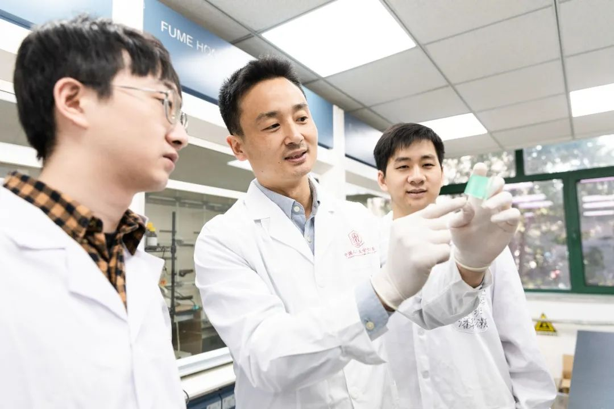
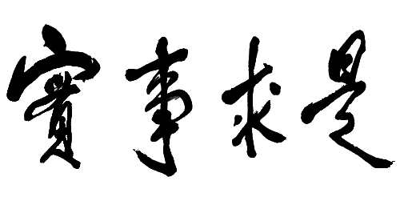
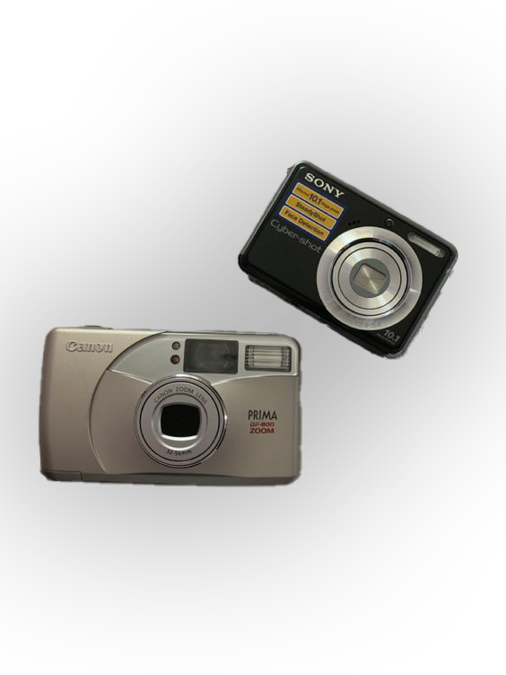
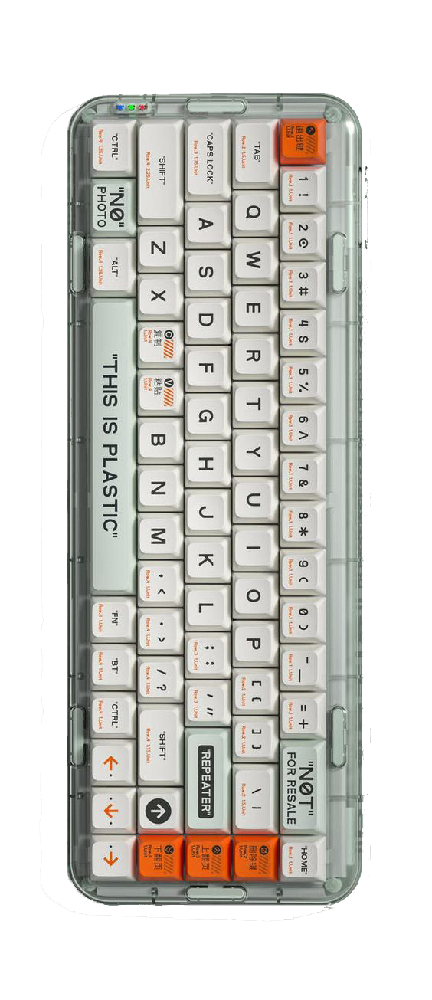

All
Business
Economy
Science
중국인민대학교
인문 사회과학을 중심으로 종합적 연구성을 띈 중국의 중점대학(重点大学)이며 교육부 직속이다. 그리고 교육부와 북경시가 같이 건설한 학교이다.
평가
특히 응용경제, 금융, 신문방송학, 법학, 마르크스학 등과 같은 상경계열을 비롯한 사회과학계열이 중국 최고수준으로 평가받는 명문종합대학으로 중국 중점 10개 대학 중 하나이다.
순위
중국교우회 평가기준 중국인민대학교의 순위는 19년도 5위, 20년도 9위, 21년도 13위, 22년도 10위이다.
| 순위 | 학교명 | 종합점수 | 성급 | 등급 |
|---|---|---|---|---|
| 1 | 북경대학교 | 100 | 8★ | 세계일류대학 |
| 2 | 청화대학교 | 99.84 | 8★ | 세계일류대학 |
| 3 | 상해교통대학교 | 80.25 | 8★ | 세계일류대학 |
| 4 | 절강대학교 | 80.21 | 8★ | 세계일류대학 |
| 5 | 우한대학교 | 77.59 | 8★ | 세계일류대학 |
| 6 | 남경대학교 | 77.52 | 8★ | 세계일류대학 |
| 6 | 복단대학교 | 77.52 | 8★ | 세계일류대학 |
| 8 | 중국과학기술대학교 | 76.78 | 8★ | 세계일류대학 |
| 9 | 화중과기대학교 | 76.38 | 7★ | 세계지명고수준대학 |
| 10 | 중국인민대학교 | 73.75 | 8★ | 세계일류대학 |
| 10 | 천진대학교 | 73.75 | 7★ | 세계지명고수준대학 |
여담
새소식
 중공중국인민대학위원회 : 중국의 특색과 세계 일류대학으로 가는 새로운 길을 개척하다.
2022년 중국인민대학이 국내 자연과학기금에서 역대 최고를 기록하다.
새로운 길을 찾아 떠나, 모두의 꿈을 위해 출항하다. 중국인민대학교는 2022년도 신입생을 환영합니다.
절강성 공상대학교 당서기이자 총장인 울젠싱 일행이 방문하다.
임상립 교장이 종합서비스연구센터에 방문하다.
중공중국인민대학위원회 : 중국의 특색과 세계 일류대학으로 가는 새로운 길을 개척하다.
2022년 중국인민대학이 국내 자연과학기금에서 역대 최고를 기록하다.
새로운 길을 찾아 떠나, 모두의 꿈을 위해 출항하다. 중국인민대학교는 2022년도 신입생을 환영합니다.
절강성 공상대학교 당서기이자 총장인 울젠싱 일행이 방문하다.
임상립 교장이 종합서비스연구센터에 방문하다.
토론의 장
 장동강 서기는 문학원과 국학원에서 시진핑 총서기가 중국인민대학교를 시찰할 때 정신이 중요하다고 말했다고 연설했다.
장동강 서기는 마르크스주의 학원에서 시진핑 총서기가 중국인민대학교를 시찰할 때 정신이 중요하다고 말했다고 연설했다.
류웨이 교장은 통계학원에서 시진핑 총서기가 중국인민대학교를 시찰할 때 정신이 중요하다고 말했다고 연설했다.
류웨이 교장은 경제학원과 재정금융학원에서 시진핑 총서기가 중국인민대학교를 시찰할 때 정신이 중요하다고 말했다고 연설했다.
우푸라이 부서기는 예술학원과 철학원에서 시진핑 총서기가 중국인민대학교를 시찰할 때 정신이 중요하다고 말했다고 연설했다.
장동강 서기는 문학원과 국학원에서 시진핑 총서기가 중국인민대학교를 시찰할 때 정신이 중요하다고 말했다고 연설했다.
장동강 서기는 마르크스주의 학원에서 시진핑 총서기가 중국인민대학교를 시찰할 때 정신이 중요하다고 말했다고 연설했다.
류웨이 교장은 통계학원에서 시진핑 총서기가 중국인민대학교를 시찰할 때 정신이 중요하다고 말했다고 연설했다.
류웨이 교장은 경제학원과 재정금융학원에서 시진핑 총서기가 중국인민대학교를 시찰할 때 정신이 중요하다고 말했다고 연설했다.
우푸라이 부서기는 예술학원과 철학원에서 시진핑 총서기가 중국인민대학교를 시찰할 때 정신이 중요하다고 말했다고 연설했다.
인재양성
과학연구

두 가지 스마트 화학 재료로 인민대가 두 개의 학과를 교차해 새로운 성과를 내다!
삼림 생태 관리는 이미 국가 발전 계획에 포함되었다.산림생태계를 강화하고 자연재난이 산림생태계에 미치는 영향을 완화하기 위해 중국 인민대 화학과 왕야페이 교수 연구팀은 최근 화학과 환경, 농림의 교차적인 영역에서 일련의 스마트 화학소재를 개발해 산불경보 및 장기충해 방제를 서비스하고 있다.
교류의 장
중국인민대학교에서 북경과 홍콩의 2022년도 대학 연맹 이사회가 열리다.
지난 6월 30일 2022년도 북경과 홍콩의 대학연맹 이사회가 온라인으로 열렸다.이번 이사회는 연맹 순환이사장 단위인 인민대학 주최로 연맹 지원단위와 20개 회원고교 대표 60여 명이 참석한다.
표어

실사구시.
있는 그대로의 사실에 토대하여
진리를 탐구하다.
있는 그대로의 사실에 토대하여
진리를 탐구하다.

교육기구
학사학위 81개
석사학위 189개
박사학위129개



 밤의 인민대
밤의 인민대
낮의 인민대
 인문로
인문로
 가을 낙옆
가을 낙옆
RUC!
 해바라기랑 졸업!
해바라기랑 졸업!
 드디어 졸업!
드디어 졸업!
 도서관
도서관
지루했지만 알찬 수업